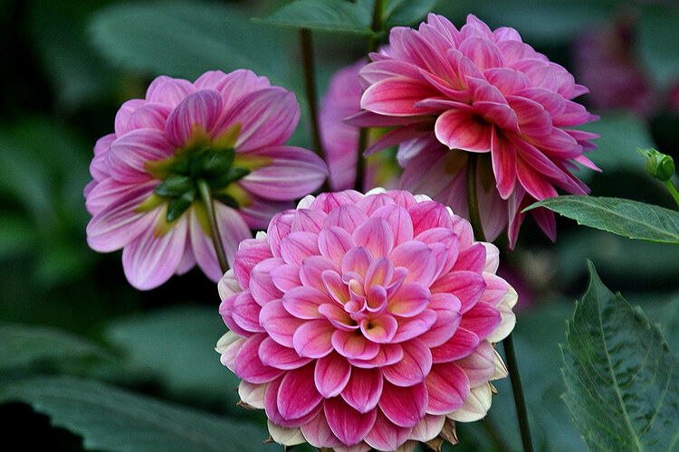
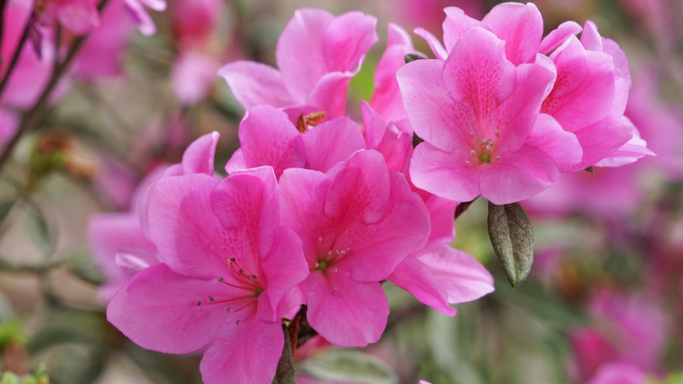
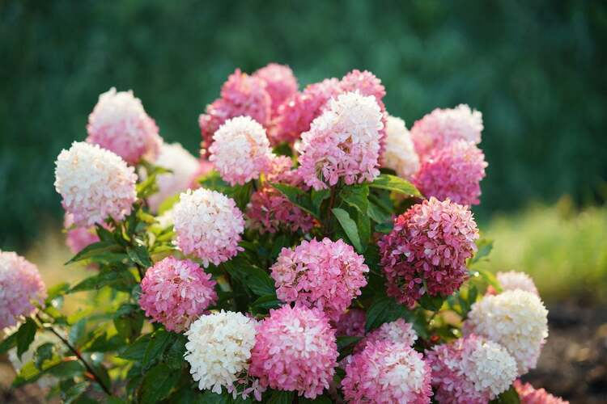

Dahlias
Striking and complex, these flowers represents elegance, inner strength, creativity, and dignity.
Recut stems at an angle, remove underwater leaves, and place in a clean vase with warm water. Change the water daily.

Encore Azalea
A dual-blooming beauty that signifies feminity and passion tempered by fragile beauty.
Cut stems at an angle underwater and place in warm water. Keep in bright indirect light and recut stems every couple of days.

Panicle Hydrangea
With their abundant clusters, they convey gratitude, heartfelt emotion, and the sincerity of an apology.
Provide plenty of cool water immediately. Recut stems at an angle, remove lower leaves, and mist the blooms daily to keep them vibrant.